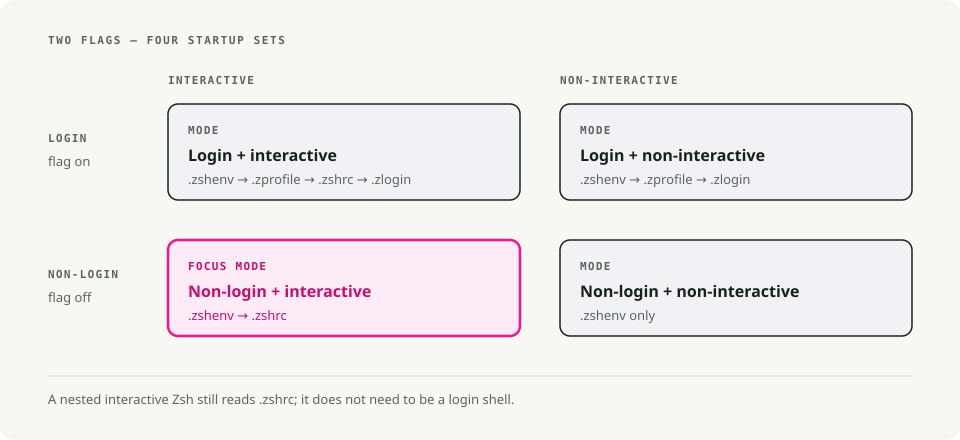
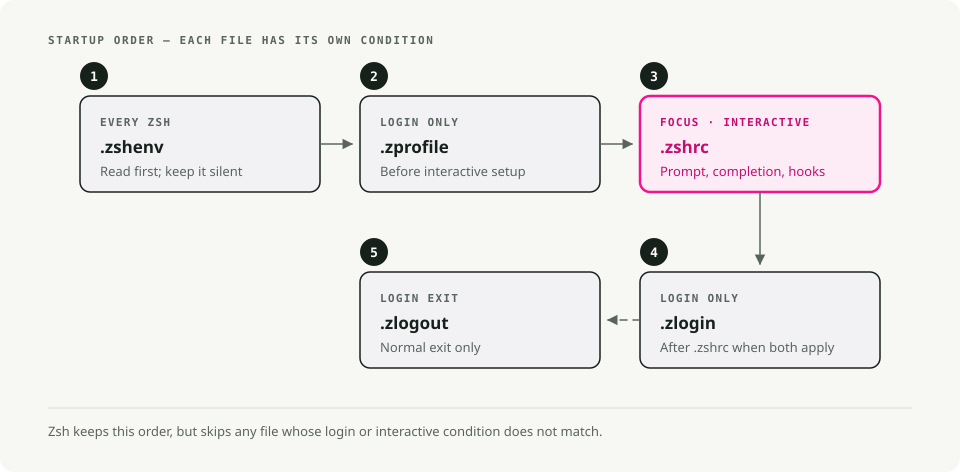

Zsh Startup Files: ~/.zprofile vs ~/.zshrc on macOS and Linux
If your terminal feels slow, or your environment variables aren't loading where you expect, you're probably running into Zsh's startup order.
The split between ~/.zprofile and ~/.zshrc is one of the most common sources of confusion when you move to Zsh, especially on macOS, where the defaults behave differently from Linux.
TL;DR
~/.zprofile is for environment setup. It runs once per login, which on macOS means once per terminal tab. Put your PATH, EDITOR, and version managers like fnm or pyenv there.
~/.zshrc is for interactive configuration. It runs every time you start a new shell. Put aliases, prompt themes, and key bindings there.

The shell startup flow
To know where to put things, you need to know when files load. Zsh has a specific hierarchy.
Login vs. interactive shells
A login shell is the first shell you get after authentication. On macOS, every new terminal tab or window is a login shell by default. On Linux, opening a terminal usually starts a non-login interactive shell instead, which is where most of the cross-platform confusion comes from.
An interactive shell is anything where you can type commands.
Here's what actually happens when you open a terminal on macOS:

The loading order
~/.zshenv(optional). Runs for every shell, including non-interactive scripts. Don't put output or heavy logic here — it can break scripts that source your config. Use it only for environment variables that must exist everywhere, which is rare for most people.~/.zprofile. Runs only for login shells. Your setup phase.~/.zshrc. Runs for interactive shells. Your customization phase.~/.zlogin(optional). Runs at the very end of a login shell startup.
What goes where?
~/.zprofile: the environment layer
This is where you set up the things every other process inherits — paths, variables, language version managers.
What belongs here:
PATHmodifications.- Environment variables:
EDITOR,LANG,GOPATH,JAVA_HOME. - Tool initialization that touches the environment:
pyenv,rbenv,fnm,cargo.
These only need to be calculated once. If you put them in .zshrc, they get recomputed every time you open a sub-shell or run a script, which both wastes time and can leave duplicate entries in your PATH.
# ~/.zprofile
# 1. Set up your PATH
# Local bin first so your tools override system ones
export PATH="$HOME/.local/bin:/opt/homebrew/bin:$PATH"
# 2. Global variables
export EDITOR="nvim"
export VISUAL="nvim"
export LANG="en_US.UTF-8"
# 3. Version managers (the heavy ones)
# Doing this here keeps shell startup fast
eval "$(fnm env --use-on-cd)"
eval "$(pyenv init -)"
~/.zshrc: the interactive layer
This is where you customize the shell you actually type into.
What belongs here:
- Aliases:
alias g='git'. - Your prompt: Starship, Powerlevel10k, Pure.
- Completions:
compinit. - Key bindings:
bindkey. - Shell options:
setopt autocd,setopt histignorealldups.
These only matter when a human is at the keyboard. A script running in the background doesn't need your prompt or your git aliases.
# ~/.zshrc
# 1. Prompt
autoload -Uz promptinit && promptinit
prompt pure
# 2. Aliases
alias ll='ls -lah'
alias g='git'
alias gs='git status'
# 3. Shell options
setopt autocd # cd by typing the directory name
setopt histignorealldups # skip duplicate history entries
setopt share_history # share history across tabs
# 4. Completions
autoload -Uz compinit && compinit
Why not put everything in one file?
You might be wondering: if .zprofile runs first, why not drop your aliases there and skip .zshrc entirely?
It comes down to inheritance vs. re-definition.
Environment variables inherit
When you export EDITOR="vim" in a parent shell, every child process inherits it: sub-shells, scripts, programs. You set it once and it propagates down the tree, which is why .zprofile is the right place for export.
Aliases and functions don't
Aliases like alias g='git' and shell functions are local to the current shell. They don't pass to child shells.
If you define an alias in .zprofile, it exists in your top-level login shell. The moment you type zsh to start a sub-shell, or run a script, that alias is gone. To have aliases everywhere, you have to redefine them in every new interactive shell. That's exactly what .zshrc is for.
Scripts don't need human features
When you run a shell script (./deploy.sh), it starts a new non-interactive shell. It doesn't need your prompt, it doesn't need your git aliases, and it certainly doesn't want to wait for oh-my-zsh to finish loading. Keeping interactive config in .zshrc means scripts run fast and clean, without your personal customization leaking in.
Common pitfalls
Putting nvm or pyenv in .zshrc
You open a new terminal tab and it takes two or three seconds before you can type anything. Version managers usually have heavy initialization, and .zshrc runs every single time. Move them to ~/.zprofile and the lag disappears.
A growing PATH
Your $PATH ends up with the same directories listed five times. The cause is almost always export PATH="$HOME/bin:$PATH" sitting in .zshrc: every reload (source ~/.zshrc) or sub-shell appends the path again. Move PATH definitions to ~/.zprofile.
Reloading after changes
Changes to ~/.zprofile don't apply to your current shell, because .zprofile is only read at login. You can either close the tab and open a new one (the easiest option) or run source ~/.zprofile manually.
For .zshrc, just:
source ~/.zshrc
A configuration that works on macOS and Linux
If you bounce between machines (macOS at work, Linux at home, or the other way around), you'll hit a wrinkle. Linux terminals often start as non-login shells, which means they skip ~/.zprofile entirely.
The usual workaround is to source .zprofile from .zshrc when it hasn't been loaded:
# ~/.zshrc
# On Linux/non-login shells, make sure the environment is set
if [[ -o interactive && ! -o login ]]; then
[[ -f ~/.zprofile ]] && source ~/.zprofile
fi
# ... rest of your interactive config
Summary
| File | Purpose | Examples |
|---|---|---|
~/.zshenv |
Critical env vars | ZDOTDIR (advanced users only) |
~/.zprofile |
Environment setup | PATH, EDITOR, eval "$(pyenv init -)" |
~/.zshrc |
Interactive config | alias, prompt, bindkey, compinit |
Two rules cover most of this. Variables inherit down the process tree, so export belongs in .zprofile. Aliases and functions don't inherit, so they belong in .zshrc and have to be redefined for every new interactive shell. If new tabs feel slow, the culprit is almost always a heavy pyenv init or nvm.sh sitting in .zshrc instead of .zprofile.
Key Takeaways
- Use
.zprofilefor login-shell setup such as PATH initialization on macOS Terminal. - Use
.zshrcfor interactive-shell behavior such as aliases, prompt config, completions, and shell options. - Do not duplicate PATH edits across both files; duplication makes debugging startup order painful.
- When in doubt, put environment bootstrapping in
.zprofileand interactive conveniences in.zshrc.
References
- Zsh startup files documentation - startup and shutdown file order.
- Apple Terminal User Guide - macOS terminal behavior.